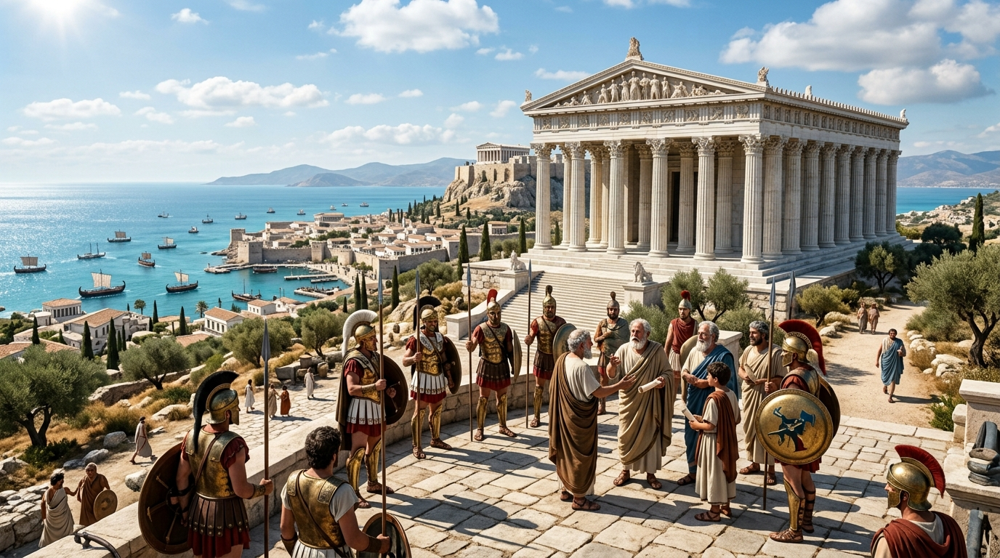

Alexandre, a Helenização e os Anos de Silêncio Profético
Embora as nações clássicas da Grécia (como Atenas e Esparta) raramente apareçam nas páginas do Antigo Testamento, a ascensão meteórica da Macedônia sob a liderança de Alexandre, o Grande, alterou irreversivelmente a trajetória da história bíblica. Enquanto impérios anteriores subjugavam pelo terror militar ou pela diplomacia, a Grécia conquistou o mundo antigo através de uma força muito mais persuasiva e duradoura: a cultura. Esse período fascinante — que preenche a lacuna de 400 anos entre o fim de Malaquias e o início do Novo Testamento — é conhecido como o Período Intertestamentário, um tempo de intenso conflito religioso e preparação silenciosa para a chegada do Messias.
1. A Visão do Leopardo e a Conquista Relâmpago
A espantosa velocidade das conquistas gregas não pegou a providência divina de surpresa; ela foi descrita em detalhes assombrosos pelo profeta Daniel séculos antes. Daniel viu a Grécia simbolizada por um leopardo com quatro asas de ave nas costas, e mais tarde, como um bode com um chifre notável nos olhos que se movia tão rapidamente "que não tocava no chão" (Daniel 8:5).
Essa precisão profética materializou-se no século IV a.C. Em apenas doze anos, o jovem Alexandre esmagou o outrora invencível Império Persa, marchando triunfante desde o Egito até os confins da Índia. Ele não buscava apenas terras, mas desejava civilizar o mundo "bárbaro" com o estilo de vida grego. Contudo, aos 32 anos, no auge do seu poder, Alexandre morreu abruptamente em Babilônia, sem deixar um herdeiro forte. Cumprindo mais uma vez a profecia de Daniel, o "grande chifre foi quebrado" e o império foi fatiado entre seus quatro generais principais.
2. A Helenização e o Milagre da Septuaginta (LXX)
O legado de Alexandre superou em muito a força de suas espadas. A política de "helenização" — a imposição da língua, filosofia, arte e religião gregas — tornou-se o novo padrão mundial. Para os judeus, isso gerou uma crise existencial profunda: seria possível manter a pureza da adoração a Yahweh vivendo num mundo obcecado pelos deuses do Olimpo e pelos ginásios gregos?
Paradoxalmente, essa pressão cultural gerou um dos maiores presentes de Deus para o mundo: a Septuaginta (frequentemente abreviada como LXX). Na cidade egípcia de Alexandria, governada pela dinastia dos Ptolomeus, uma grande comunidade judaica havia esquecido o hebraico original. Para suprir essa necessidade, estudiosos traduziram todo o Antigo Testamento para o grego koiné. Esta tradução não apenas preservou a fé da diáspora, mas tornou as Escrituras Sagradas acessíveis ao mundo gentílico, criando todo o vocabulário teológico (como "Cristo", "Igreja", "Graça") que os apóstolos usariam séculos mais tarde para escrever o Novo Testamento.
3. A Abominação da Desolação e a Revolta dos Macabeus
Se o domínio grego no Egito (Ptolomeus) foi tolerante com os judeus, o domínio na Síria (Selêucidas) revelou-se um pesadelo tirânico. Em 167 a.C., o insano rei Antíoco IV — que exigia ser chamado de "Epifanes" (Deus manifesto) — decidiu varrer o judaísmo da face da terra. Ele proibiu a circuncisão, a guarda do sábado, queimou rolos da Torá e, num ato de suprema blasfêmia profetizado por Daniel como "a abominação desoladora", invadiu o Templo de Jerusalém, ergueu um altar a Zeus e sacrificou porcos no lugar santíssimo.
A resposta a essa profanação foi uma das rebeliões mais heroicas da história. Liderados pelo idoso sacerdote Matatias e seus cinco filhos (conhecidos como os Asmoneus ou Macabeus — "Os Martelos"), os judeus travaram uma implacável guerra de guerrilha contra o formidável exército selêucida. Milagrosamente, eles venceram. Em 164 a.C., Judas Macabeu recapturou Jerusalém, purificou o Templo e reacendeu a Menorá sagrada. Este triunfo da fé sobre o imperialismo pagão é celebrado pelos judeus até hoje na Festa da Dedicação, ou Hanuká (uma festa que o próprio Jesus participou, segundo João 10:22).
4. O Cenário Preparado para o Novo Testamento
Quando os quatrocentos anos de silêncio profético terminaram e o Novo Testamento começou, a assinatura do Império Grego estava em toda parte. A Judeia estava fragmentada entre facções políticas e religiosas (Fariseus e Saduceus) que nasceram justamente dos atritos da era dos Macabeus. Mais importante ainda, o grego koiné havia se tornado o "inglês" da antiguidade. Sem perceber, a ambição de Alexandre, o Grande, construiu a ponte linguística perfeita para que a mensagem da cruz viajasse rapidamente de Jerusalém para Roma, confirmando que até mesmo as nações pagãs trabalham para o cumprimento dos propósitos eternos de Deus.
Continue sua jornada:
- Voltar ⬅️ Ver todos os impérios
- Temas 📚 Ver todos os estudos
Apoie este projeto 🌱
Se este estudo foi útil, considere apoiar a manutenção do site.
Chave PIX (Celular):
marcosmontanaria@gmail.com